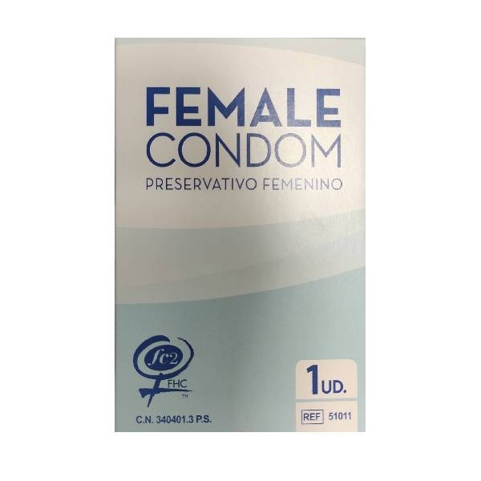

Condon Masculino
Prevenir embarazos no deseados y la transmisión de enfermedades de transmisión sexual (ETS), como el VIH.

Condon Femenino
También conocido como condón interno, sirve para prevenir embarazos no deseados y proteger contra las infecciones.
Pastillas del siguien dia
Son un método anticonceptivo hormonal que se utiliza en caso de emergencia para prevenir un embarazo no planeado después de una relación sexual sin protección .